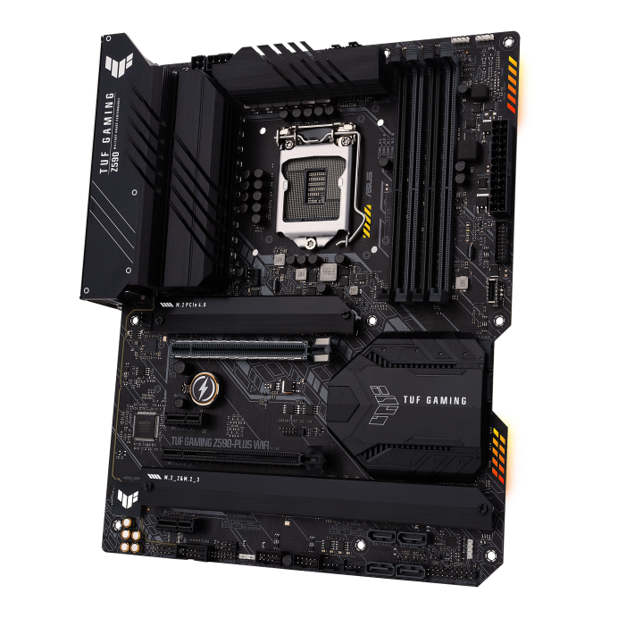
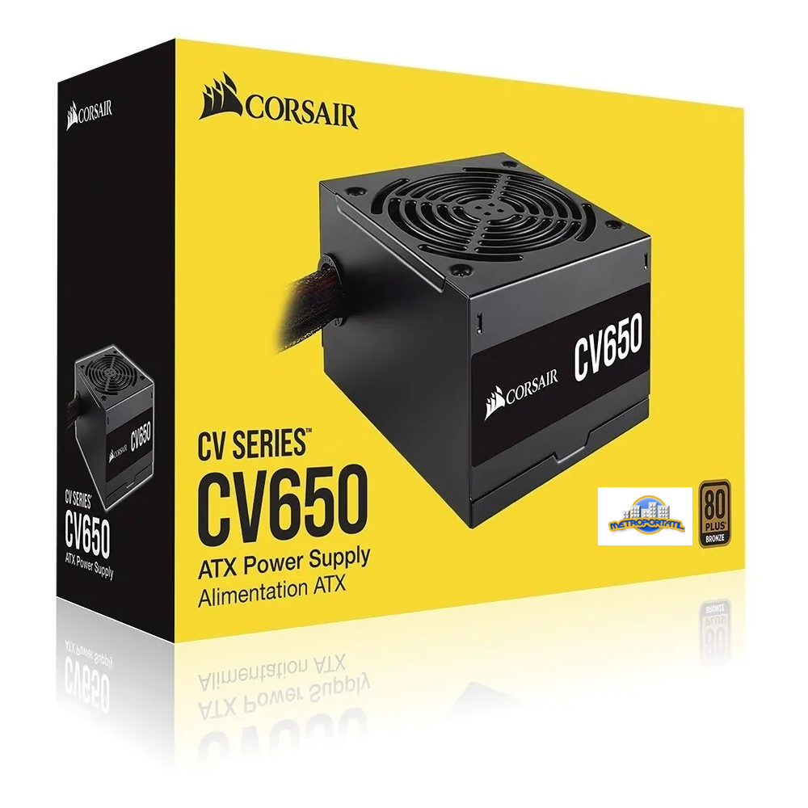
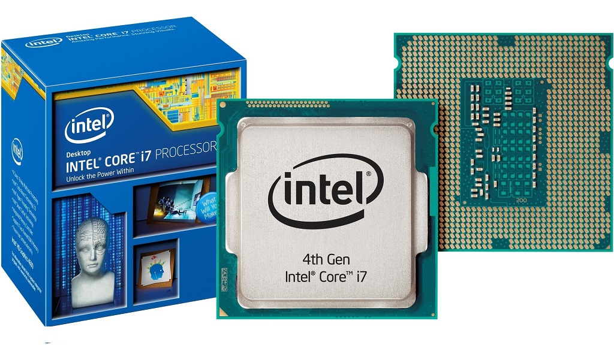

Componentes
Tarjeta madre
Tarjeta madre Intel® Z590 (LGA 1200) ATX para juegos con 16 fases de poder DrMOS, PCIe® 4.0, tres puertos M.2, Intel® WiFi 6 y Ethernet de 2.5 Gb, HDMI®, DisplayPort™, USB 3.2 Gen 2x2 Tipo-C®, SATA 6 Gbps y USB 3.2 Gen 1 Tipo-C® en el panel frontal, compatibilidad con Thunderbolt™ 4 e iluminación Aura Sync RGB
Precio 30$Comprar
Fuente de poder
Las fuentes de alimentación CORSAIR CV son perfectas para alimentar su nuevo PC Gamer, con la eficacia 80 PLUS Bronce garantizada para proporcionar una potencia plena continuamente al sistema.
Precio 50$Comprar
Microprocesador I7
Core i7 4770-Core i7 4770K Arquitectura Haswell en proceso de 22 nm. Cuatro núcleos y ocho hilos a 3,4 GHz-3,9 GHz en el modelo estándar, 3,5 GHz-3,9 GHz en el modelo K. 8 MB de caché. Soporte de overclock en el modelo K. Éste funciona a 4,5 GHz en la comparativa. Ambos tienen un TDP de 84 vatios.
Precio 20$Comprar
Disco Duro

Modelo WD20EURS del fabricante Western Digital. Diseñados especialmente para funcionar de manera permanente a alta temperatura en operaciones de streaming digital Audio/Vídeo, como son los videograbadores. Hace uso de la tecnología GreenPower que reduce al mínimo el nivel de ruido y el consumo de potencia hasta un 40% comparado con otros discos duros.
Precio 100$Comprar